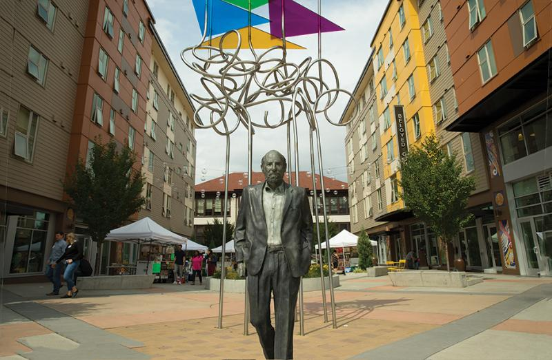

The Answers
What factors have influened this uneven development?

Community Leadership by Example
While running statistic analysis can tell us some things, talking to people on the ground will tell us more. In an interview I conducted with community leaders at El Centro De La Raza on Beacon Hill, I learned of the ways they worked with the city to create a light rail station by their community center, lease their land to Sound Transit for staging, and then use the money they earned from the leasing to create one of the cities largest family-oriented (2-3 bedroom) restricted income housing facilities (Plaza Roberto Maestas).
And in talks with community members at the Roosevelt Station, we have found a largely white, affluent community that was welcoming to the redevelopment of their neighborhood to accomodate dense housing around their light rail station with an even bigger footprint of rent resticted housing. One building alone is exclusively low-income housing with over 300 units.
At the same time, Rainier Beach has been thoughtful and patient with what they should do with their opportunity. In a discussion I had with the Rainier Beach Action Coalition, I learned about the efforts that started in 2010 to work with community residents to hear what they would like to see happen to their neighborhood. The idea of a considerate zoning redesignation was in place to formulate the creation of a Food Innovation District creating space for entreprenurial culinary workers to advance their knowledge through education, lease affordable spaces for cooking and consumption, and even grow their own food.
While it is still likely that developers are drawn to developing in 'more desirable' neighborhoods, or neighborhoods where individuals are more willing to pay a higher price to live there, we can also see that there have been active efforts to control the spread of gentrification in certain neighborhoods, while others were more welcome to it (i.e. Columbia City). This project stands as a testament to the power of community leaders to advocate for their populations, and hopefully teaches others that sustainability isn't just building new, energy effiecient buildings, but retaining the communities that make up our valuable and diverse populations.